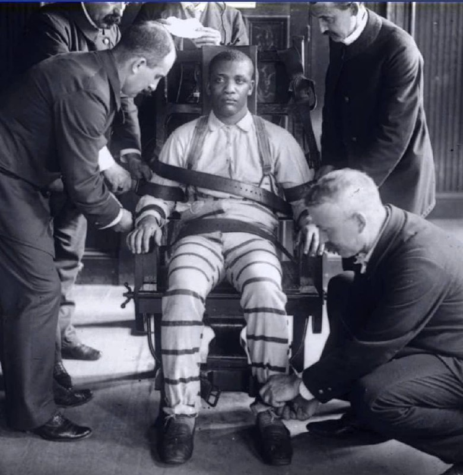

💥#руҳ
Tibbiyot olimi o'z nazariyasini sinab ko'rmoqchi edi. Unga so'nggi daqiqada o'ladigan ko'ngilli kerak edi. Nihoyat uni topdi, bu elektr stulda qatl qilinishi kerak bo'lgan mahkum edi.
Olim taklif qildi: u yurak urish tezligini minimal darajaga tushirishdan iborat bo'lgan ilmiy tajribada ishtirok etadi, shu bilan birga qon asta-sekin oxirgi tomchigacha oqadi. Mahkumning omon qolish imkoniyati minimal, ammo uning o'limi azob va og'riqsiz o'tadi.
Mahkum rozi bo'ldi, chunki elektr stulda o'lgandan ko'ra, shunday o'lgan yaxshiroq edi. Uni o’rindiqga o‘tqazib, tanasini bog‘lab qo‘yishdi. Shifokor uning bilagiga kichik bir kesma qildi. Kesim sayoz edi, faqat terining birinchi qatlamlari edi, lekin mahkum uning tomirlari kesilganiga ishondi.
O’rindiq ostida suv solingan va idishga tomchilab tushadigan shaklida kichik moslama qo'yishadi. Mahkum tomizgichni ovozini eshitib, qon deb o’lab har bir tomchini sanar edi.
Mahkumga ko’rsatmay, olim qon to'xtab qolganiga ishontirish niyatida tomchilar sekinroq tomizish uchun kranni yopdi. Bir necha daqiqadan so‘ng mahbusning yuzi oqarib ketdi, yurak urishi tezlashdi. Umidsizlik cho'qqisiga chiqqanda, olim klapanni butunlay yopdi va mahbusning yuragi tez orada to'xtadi - u vafot etdi.
Bu olim biz idrok qilgan hamma narsa, xoh ijobiy, xoh salbiy, bizga, butun psixologik va somatik apparatimizga ta'sir qilishini isbotlay oldi.
Odamlarga halokatli virus borligi aytilganda, odamlar uning oldida sof qo'rquvdan o'lishadi. OAV orqali ma'lumotni o'zlashtirib, immunitet tizimi bu qo'rquv tufayli tobora zaiflashadi.
Bugungi kunda ma'lumki, virusdan o'lim xavfi aslida kichik - ammo insonning ruhi boshqacha qabul qiladi.
Agar sog'lig'ingiz yaxshi bo'lsa va siz kasal bo'lib qolishdan qo'rqmasangiz, hech qanday virus bunday kuchli kuchga ega emas. Ehtimol, bu ko'plab bolalar o'lim qo'rquvini bilishmagani uchun juda og'ir vaziyatlarda omon qolishining sababidir.
Shunday ekan, ruhingiz holati - iymon va e'tiqodingizga ehtiyot bo'ling!